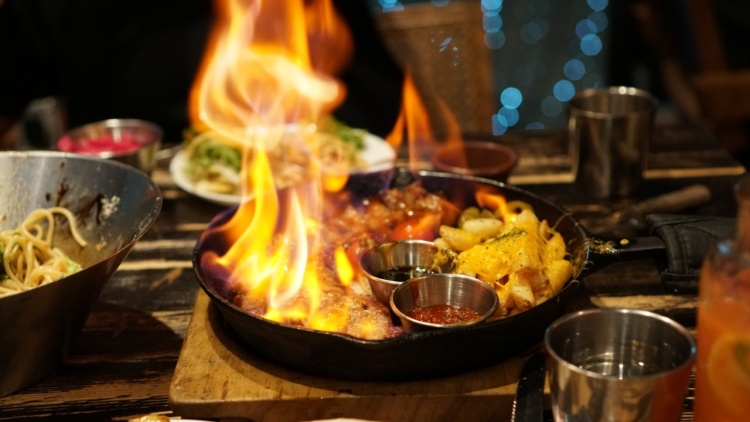
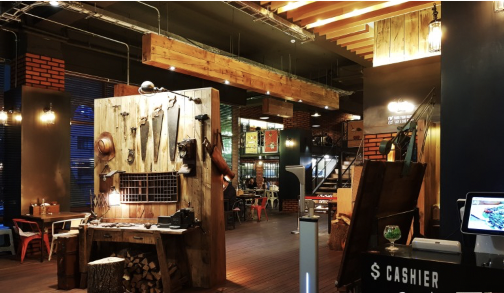
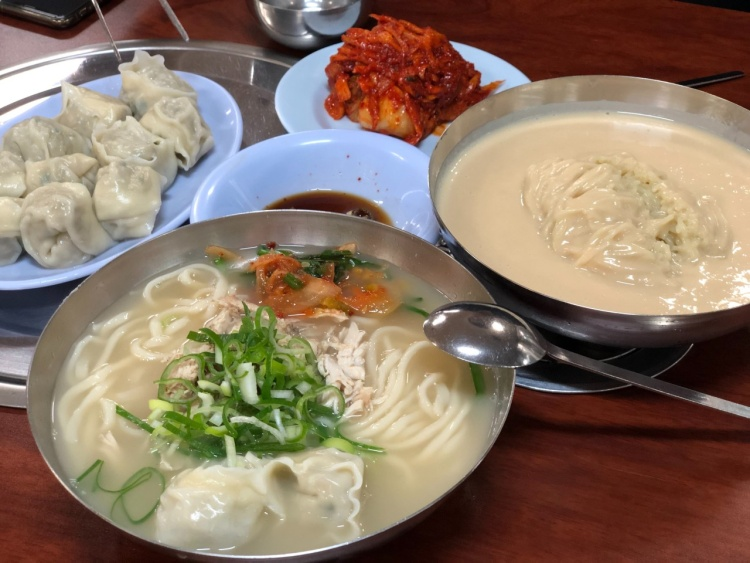
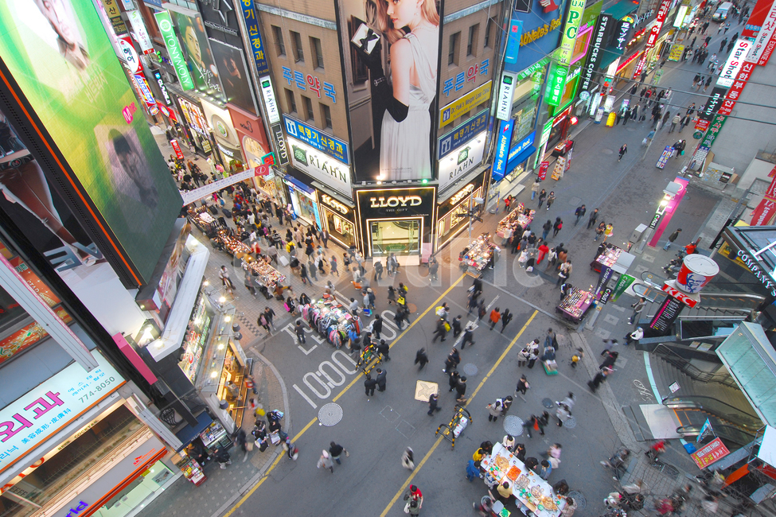
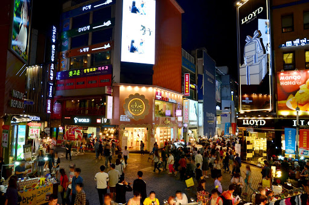
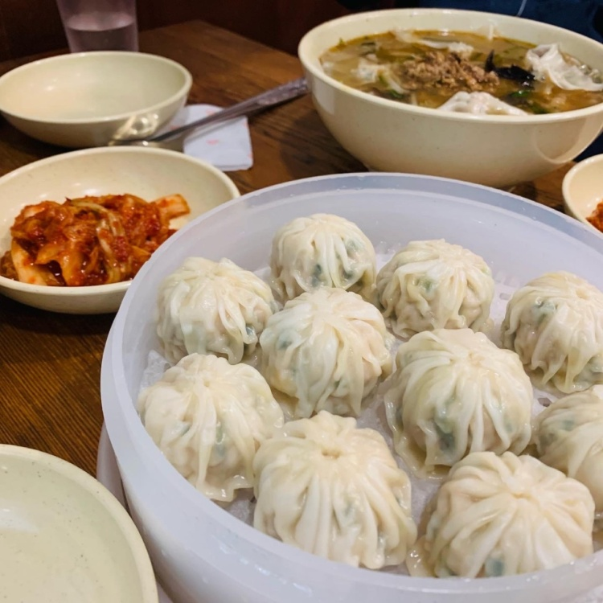
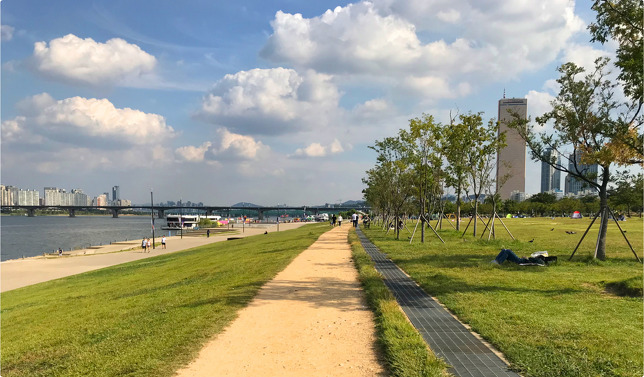
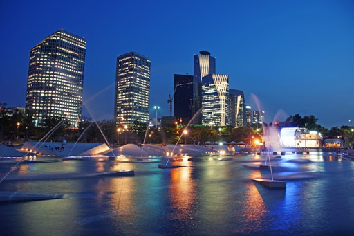
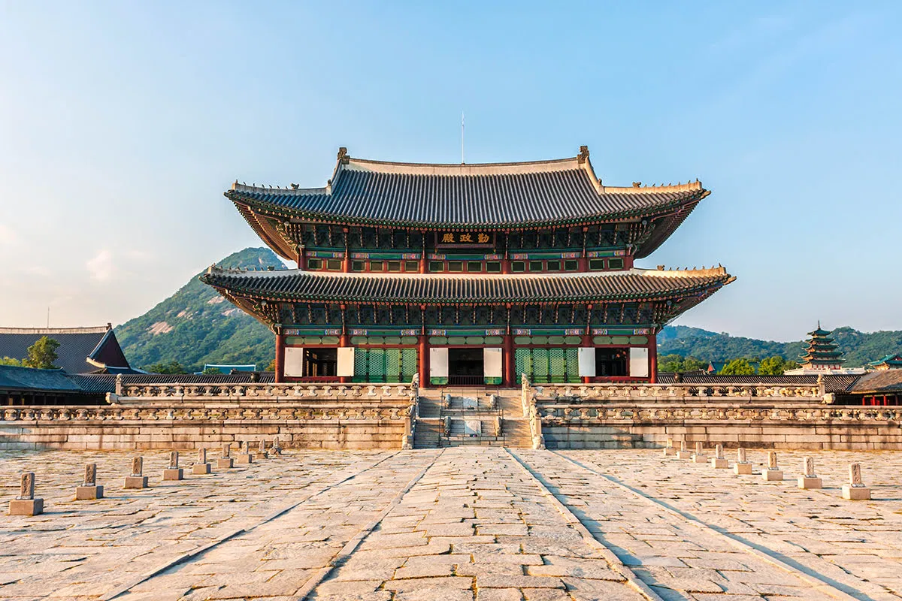
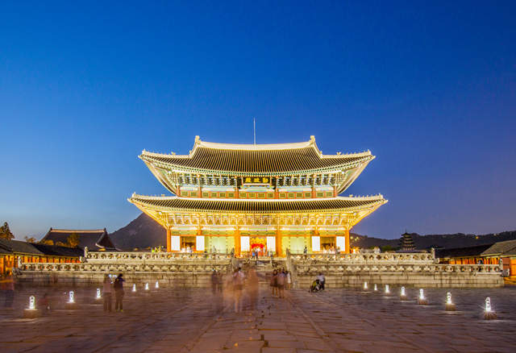

서울은 아름다운 도시입니다. 자연과 도시가 자연스럽게 이루어져 볼거리가 많으며 밤에는 멋진 야경을 선사합니다.
편리한 지하철을 이용하여 어디든 갈수있고, 인구가 많아서 밤길에도 안전합니다. 또한 동네별로 골목길은 사뭇 다른 분위기를 선사합니다.
Food
강남 마초쉐프
 ⭐️⭐️⭐️⭐️⭐️
강남 신논현역에 위치한 유명한 이탈리아 음식점입니다. 공방같은 독특한 분위기로 손님들에 입맛을 자극합니다.
불쇼같은 퍼포먼스로 눈으로 보는 즐거움도 동시에 줍니다! 맛도 있고 가격도 착한가격으로 이런 분위기 좋은 식당이 있을까요?
서울에 간다면 꼭 맛집 마초쉐프를 들려보세요.
평소에 사람이 많으니 예약 하는걸 추천합니다. 팁: 2층이 더 분위기가 좋습니다.
진주집
⭐️⭐️⭐️⭐️
영등포구 여의도동에 위치한 맛집 진주집입니다. 이영자 맛집리스트에도 올라갔다고하네요!
메뉴를 잘 못 고르신다구요? 걱정하지마세요 진주집은 메뉴가 딱 4개 입니다! 그중 닭칼국수가 가장 맛있다고 하네요.
만약 점심시간에 간다면 빠르게 움직이세요! 어느세 테이블이 꽉차있을지 모른답니다 🥲
View
쇼핑 거리 '명동'
 ⭐️⭐️⭐️
서울 시민이라면 가보지 않은 사람이 없을 정도로 유명한 서울의 쇼핑거리입니다. 항상 사람들로 북적거리고 롯데백화점, 신세계 백화점, SPA 브랜드 등
다양한 매장이 입점되어 쇼핑 천국입니다! 또한, 명동에서는 쇼핑뿐만 아니라 연극, 영화 등 다양한 문화생활도 즐길수있습니다.
명동 교자 본점
명동에 갔다면 꼭 명동 교자 본점을 들리세요. 체인점이라고 맛이 같다고 생각하지마세요. 본점은 다릅니다😁
다양한 길거리 음식이 있으니 꼭 먹어보세요. 명동은 밤이 되면 간판에 조명이 켜지고 멋진 분위기를 연출합니다.
여의도 한강공원
 ⭐️⭐️⭐️⭐️
여의도한강공원은 정치, 금융, 언론의 중심지인 여의도에 자리하고 지하철, 버스 등 대중교통으로 접근성이 좋아 직장인과 일반시민들이 즐겨찾는 명소이자 봄꽃축제, 세계불꽃축제, 각종 공연 및 마라톤행사 등 다양한 행사가 이어져 볼거리와 즐길거리가 풍부한 휴식공간입니다.
만약 제대로 여의도 한강공원을 즐기고싶다면 꼭 돗자리, 텐트를 챙겨가세요! 연인, 친구, 가족와 함께 풀밭에 앉아 도시속 자연을 즐기세요.
Landmark
경복궁
 ⭐️⭐️⭐️⭐️⭐️
조선 왕조 개국 3년인 1395년에 완공된 궁궐은 390여 칸으로 한양의 중심축에 자리했습니다. 개국공신 정도전은 태조로부터 첫 번째 궁궐의 이름을 지으라는 명을 받았고, 고심 끝에 '새 왕조가 큰 복을 누려 번영할 것'이라는 의미로 경복궁이라는 이름을 붙여졌습니다.
경복궁은 외국인이 한국을 오면 꼭 들리는 장소로 현재는 야간개장을 시작하면서 많은 연인들이 한복을 입고 사진을 찍는 장소입니다. 낮과는 다르게 야간에 더욱 경복궁에 웅장함을 느낄수있습니다.
2021년 경복궁 야간관람 정보
기간 : 2021.04.01 ~ 05.31.(월) 45일간.
시간 :19:00 ~ 21:30 (입장마감 20:30)
！매주 월,화는 야간개장하지 않습니다.
롯데월드타워
⭐️⭐️⭐️⭐️⭐️
롯데월드타워는 서울 송파구 신천동에 위치하여있습니다. 123층에 555m 마천루로 한반도에서 가장 높은 마천루 입니다.
롯데타워 117~123층은 서울스카이로 서울의 풍경을 한눈에 볼수있습니다. 단, 고소공포증이 있다면 바닥을 보지마세요!
자신의 담력이 좋다면 스카이브릿지에 도전해보세요. 엄청난 스릴을 느낄수있습니다
2021년 경복궁 야간관람 정보
기간 : 2021.04.01 ~ 05.31.(월) 45일간.
시간 :19:00 ~ 21:30 (입장마감 20:30)
！매주 월,화는 야간개장하지 않습니다.